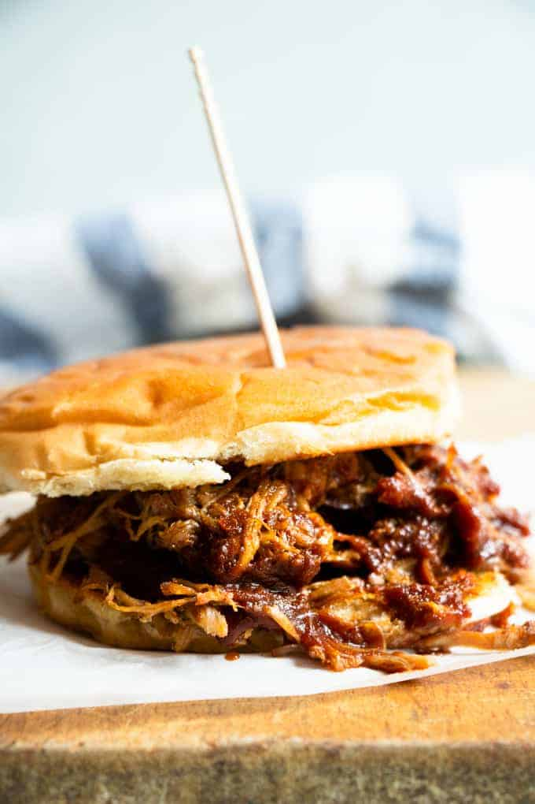

Odin Recipes
Home
About
Slow Cooker Texas Pulled Pork

Prep time: 15 mins
Cook time: 5 hrs
Total Time: 5 hrs 15 mins
Servings: 8
Yield: 8 sandwiches
Serve this homemade, old-fashioned pork at your next BBQ. !
pork cooked slowly over a low heat until it is tender enough to be pulled into strips, often prepared with a barbecue sauce.
What do you need?
- Vegetable Oil
- Pork Shoulder
- Barbeque Sauce
- Apple Cider Vinegar
- Chicken Broth
- Sauce and Spices
- Hamburger Buns
Ingredients
- 1 teaspoon vegetable oil
- 1(4 pound) pork shoulder roast
- 1 cup barbeque sauce
- 1/2 cup apple cider vinegar
- 1/2 cup chicken broth
- 1/4 cup light brown sugar
- 1 tablespoon prepared yellow mustard
- 1 tablespoon Worcestershire sauce
- 1 tablespoon chili powder
- 1 extra large onion, chopped
- 2 large cloves garlic, crushed
- 1 1/2 teaspoons dried thyme
- 8 hamburger buns, split
- 2 tablespoons butter, or as needed
Steps
- Pour vegetable oil into the bottom of a slow cooker. Place pork roast into the slow cooker; pour in barbeque sauce, vinegar, and chicken broth. Stir in brown sugar, yellow mustard, Worcestershire sauce, chili powder, onion, garlic, and thyme. Cover and cook on Low for 10 to 12 hours or High for 5 to 6 hours until pork shreds easily with a fork.
- Remove pork from the slow cooker, and shred the meat using two forks. Return shredded pork to the slow cooker, and stir to combine with juices.
- Spread the inside of both halves of hamburger buns with butter. Toast buns, butter-side down, in a skillet over medium heat until golden brown. Spoon pulled pork into toasted buns.
If you loved this recipe, here are more recipes for you
Back to Top
Back to Home